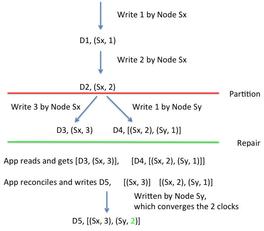

DynamoDB internal algorithms (Friday, Week 10, March 21, 2014)
Amazon DynamoDB
Cluster-level infrastructure for storage
- Scalable
- Strong performance SLAs for 99.9% of queries
- Highly available
- Sacrifices consistency
- Application expected to resolve version conflicts, not Dynamo
This is Version 1 (2007)
Version 2 has simpler interface
- Many of same underlying principles
- Still distinguishes between consistent and eventually consistent reads
Vector clocks in writes
The first node to do the write “owns” the write’s time
- Replicas (if W > 1) record the “owner’s” time

Partition opens room for several “owners”
- Timestamps diverge
- When partitions end, app must reconcile
Client must record vector clocks
Every write preceded by a read to get the current clock
- Pass that clock value as an argument to the write
- The node uses that context
The original paper is Dynamo: Amazon’s Highly Available Key-Value Store.
If you’re interested in the full algorithm, David Drysdale has implemented it in Python.